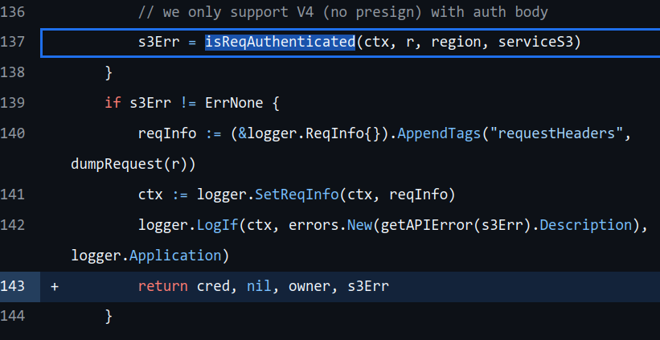

Go and don’t return
这道题目从MinIO的一个已公开的未授权访问漏洞开始, 通过编写并慢慢完善CodeQL语句来检测该漏洞在代码中的位置. 随着题目的进行, 题目将目标将扩展到此类漏洞的各种变种, 难度逐渐加深, 非常适合用来入门和学习. 本文是用来记录我在阅读官方题解时的思考过程, 因为我在Part2就卡住啦hhhhhhh.
在开始之前, 可以查看一下该漏洞的细节 和 描述, 发现该漏洞的原理其实十分简单, 就是在 if s3Err != ErrNone 判断之后没有将不合法的控制流返回, 而是任由它继续进入接下去的claims, s3Err := checkClaimsFromToken(r, cred), 导致校验失败.
具体的漏洞利用可以看这里
Part 1: Let’s catch the bug!
1.1: Finding references to ErrNone
Write the query that finds all identifiers named ErrNone. You will find in the documentation the relevant object types to query. Your query should return 231 results.
import go
from Ident i
where i.getName() = "ErrNone" //Ident就是标识符
select i
运行后就可以检索出ErrNone出现过的所有位置.
1.2: Finding equality tests against ErrNone
In this next step, write a query to find all equality test expressions where one of the operands is an identifier called ErrNone. Your query should give you 158 results.
import go
from EqualityTestExpr e
where e.getAnOperand().(Ident).getName() = "ErrNone"
select e
EqualityTestExpr是一个等式测试, 为==或!=, 它是一个Expression.
在CodeQL中, Expression是能计算为一组值并且具有类型的语句, 比如1+1, "QL", [1,2,3,4,5].
与之对应的是Statement, 例如try语句, if语句等等. statement没有返回值, 而expression是有返回值的.
e.getAnOperand().(Ident).getName() 这块是先从EqualityTestExpr中获取操作数, 然后进行类型转换后进行查看.
1.3: Finding if-blocks making such a test
Write a query that finds all if statements, where the condition is an equality test similar as found in step 1.2. Your query should give you 133 results.
import go
from IfStmt s
where s.getCond().(EqualityTestExpr).getAnOperand().(Ident).getName() = "ErrNone"
select s
从之前的EqualityTestExpr替换为了IfStmt, 缩小了范围.
1.4: Finding return statements
Write a query that finds all return statements. Your query should give 10,651 results.
import go
from ReturnStmt r
select r
可以看出来codeql支持识别的statement种类还挺多的.
1.5: Finding if-blocks without return statements
Write a query that finds all if-blocks that don’t contain return statements in their then branch. Your query should return 3541 results. Remember, we are doing baby steps! We just care about the then branch for now!
要找所有if-block中不包含返回语句的.
import go
from IfStmt i
where not i.getThen().getAStmt() instanceof ReturnStmt
select i
这里i.getThen().getAStmt()是从i的then分支中获取一个statement, 按理来说并不确定这个statement是否本应该是返回语句, 毕竟即便存在ReturnStmt, 也可能没有被getAStmt获取到. 然而关键在于这个not, 它和不等于有着完全不同的含义:
A != Bholds if there is a pair of values (one from A and one from B) that are different.not A = Bholds if it is not the case that there is a pair of values that are the same. In other words, A and B have no values in common.
至此就比较清楚了
1.6: Putting it all together
Ok, time to find our bug! Combine steps 1.5 and 1.3 and write a query that finds the if-blocks testing for equality to ErrNone with no return. You should get a total of 7 results. Check that the bug we’re looking for is one of them
import go
from IfStmt i
where
i.getCond().(EqualityTestExpr).getAnOperand().(Ident).getName() = "ErrNone"
and not i.getThen().getAStmt() instanceof ReturnStmt
select i
将上面的结合就可以了.
至此, 已经可以检测出携带漏洞特征的if代码所在的位置了.
Part 2: Improving the precision
上述codeql的查询结果中存在一些误报. 为了减少误报, 考虑使用更精确的数据流分析来检查isReqAuthenticated的返回值.

2.1: Find conditionals that are fed from calls to isReqAuthenticated
Write a data flow configuration that tracks data flowing from any call to isReqAuthenticated to any equality test operand. Your query must select all equality tests – Type: DataFlow::EqualityTestNode – where the operand is a sink of the above configuration.
This gives us 64 potentially interesting conditionals to investigate. Note many of them are not direct calls to isReqAuthenticated, instead they test the result of some intermediate function which in turn calls isReqAuthenticated. The CodeQL global data flow analysis feature allows us to detect those.
import go
class AuthTestConfig extends DataFlow::Configuration {
AuthTestConfig() { this = "auth-test-config" }
override predicate isSource(DataFlow::Node source) {
source = any(DataFlow::CallNode cn |
cn.getTarget().hasQualifiedName("github.com/minio/minio/cmd", "isReqAuthenticated")
).getResult()
}
override predicate isSink(DataFlow::Node sink) {
sink = any(DataFlow::EqualityTestNode n).getAnOperand()
}
}
from AuthTestConfig config, DataFlow::Node sink, DataFlow::EqualityTestNode comparison
where config.hasFlow(_, sink) and comparison.getAnOperand() = sink
select comparison
哇塞, 是传说中的污点分析! 其实严格意义上不算是, 这个算是数据流跟踪.
AuthTestConfig定义了数据流配置, 其中isSource和isSink分别定义了污点分析中的数据流起点Source和数据流终点Sink. 这里Source为调用isReqAuthenticated函数的节点, Sink是比较测试节点中的操作数.
根据文档, any这玩意的用法如下
any(<variable declarations> | <formula> | <expression>)
<formula>是对variable的要求, 对于每一个满足要求的变量都会返回一个<expressions>, 如果没有<expressions>就返回variable本身, 因此可能会返回多个.
那么问题来了, source或者sink是怎么和any的多个返回值进行比较的呢? 其实答案在文档中已经描述了:
For expressions A and B, the formula A = B holds if there is a pair of values—one from A and one from B—that are the same. In other words, A and B have at least one value in common. For example, [1 .. 2] = [2 .. 5] holds, since both expressions have the value 2.
因此, 根据文档, 1 = [1..2] 是成立的, 那么isSource和isSink中的比较也是成立的.
最后, config.hasFlow(_, sink) 中将source部分设置为_, 因为我们的查询中并不包含source, 而comparison.getOperand() = sink也是方便去查询出相应的比较测试节点.
2.2: Find the true bug!
We can now put this dataflow query together with our query from step 1.6, and find all if statements that
- Are one of the equality tests returned in 2.1
- Are testing equality against ErrNone
- Do not contain a return statement in their then branch
import go
class AuthTestConfig extends DataFlow::Configuration {
AuthTestConfig() { this = "auth-test-config" }
override predicate isSource(DataFlow::Node source) {
source = any(DataFlow::CallNode cn |
cn.getTarget().hasQualifiedName("github.com/minio/minio/cmd", "isReqAuthenticated")
).getResult()
}
override predicate isSink(DataFlow::Node sink) {
sink = any(DataFlow::EqualityTestNode n).getAnOperand()
}
}
EqualityTestExpr getAnAuthCheck() {
exists(AuthTestConfig config, DataFlow::Node sink, DataFlow::EqualityTestNode comparison |
config.hasFlow(_, sink) and comparison.getAnOperand() = sink |
result = comparison.asExpr()
)
}
from IfStmt i
where
i.getCond() = getAnAuthCheck() and
i.getCond().(EqualityTestExpr).getAnOperand().(Ident).getName() = "ErrNone"
and not i.getThen().getAStmt() instanceof ReturnStmt
select i
将之前的部分结合起来就可以了. 这里新出现了一个exists, 其用法为:
exists(<variable declarations> | <formula>)
当存在一个变量使得formula成立, 公式成立, 而formula可以有多个, 即
exists(<variable declarations> | <formula 1> | <formula 2> |...| <formula n>)
等价于
exists(<variable declarations> | <formula 1> and <formula 2> and...and <formula n>)
如果至少存在一组variables使得全部formula都满足, 那么公式成立.
而题解中的这种写法, 相当于等前面所有的formula都满足的时候, 临时变量result会被赋值 comparison.asExpr() , 而result又是 getAnAuthCheck 的返回值, 因此就变成: 返回一组满足运算单元是污点源的 EqualityTestExpr.
Part 3: Expanding the query
这部分要扩大范围, 不再局限于MinIO了, 使用的检测对象是这道题目附带的database.
3.1: Conditional polarity
You might have noticed this in step 1.6: our code looking for equality tests encompases both x == ErrNone and x != ErrNone and checks the then block in both cases. This is wrong. It ought to check the “then” or “else” case of an if block, depending on which form of conditional is used. Modify your query to fix this problem. Your query should be able to detect all bad examples in conditionalPolarities.go. Hint: Check out the predicate EqualityTestExpr.getPolarity
需要根据x==ErrNone和x!=ErrNone的不同情况进行不同检查.
import go
class AuthTestConfig extends DataFlow::Configuration {
AuthTestConfig() { this = "auth-test-config" }
override predicate isSource(DataFlow::Node source) {
source = any(DataFlow::CallNode cn |
cn.getTarget().hasQualifiedName("github.com/minio/minio/cmd", "isReqAuthenticated") or
// Note new source function:
cn.getTarget().hasQualifiedName("github.com/github/codeql-ctf-go-return", "errorSource")
).getResult()
}
override predicate isSink(DataFlow::Node sink) {
sink = any(DataFlow::EqualityTestNode n).getAnOperand()
}
}
EqualityTestExpr getADirectAuthCheck(boolean polarity) {
exists(AuthTestConfig config, DataFlow::Node sink, DataFlow::EqualityTestNode comparison |
config.hasFlow(_, sink) and comparison.getAnOperand() = sink |
result = comparison.asExpr() and
polarity = result.getPolarity()
)
}
/**
* Given `ifStmt`'s condition compares some `x` against `ErrNone` with `polarity` (true means checking
* equality; false checking inequality), return the block reached when `x != ErrNone`.
*/
BlockStmt getErrorBranch(IfStmt ifStmt, boolean polarity) {
polarity = [true, false] and
if polarity = true then result = ifStmt.getElse() else result = ifStmt.getThen()
}
from IfStmt i, boolean testPolarity
where
i.getCond() = getADirectAuthCheck(testPolarity) and
i.getCond().(EqualityTestExpr).getAnOperand().(Ident).getName() = "ErrNone"
and not getErrorBranch(i, testPolarity).getAStmt() instanceof ReturnStmt
select i
重点是if polarity = true then result = ifStmt.getElse() else result = ifStmt.getThen()这一句.
另外polarity = [true, false]这个是对变量的限制, 在文档中有相关的描述
It must be possible to evaluate a predicate in a finite amount of time, so the set it describes is not usually allowed to be infinite. In other words, a predicate can only contain a finite number of tuples.
如果没有polarity = [true, false], 虽然理论上来说boolean变量也只有两个值, 但是统一起见还是需要做限制.
3.2: More blocks
Let’s detect more blocks that must return. For example, our query fails to detect a return statement in an else branch, and there are other such cases that we need to handle, such as cascading else or switch/case. Modify your query to find more blocks that don’t return. Your query should be able to detect all bad examples in moreWaysToReturn.go. Hints: While we could recursively inspect the control-flow structures inside the if block, it may help to use the control-flow graph. Check the documentation of the class IR::ReturnInstruction, a control-flow graph node corresponding to a return statement, and the getAPredecessor() / getASuccessor() methods of its superclass ControlFlow::Node, which traverse control-flow graph edges. A passing or failing if test is always followed by a ConditionGuardNode that indicates which branch was taken.
Tip: Try creating a temporary query such as the one below to get an idea what the control flow graph looks like.
from ControlFlow::Node pred, ControlFlow::Node succ
where succ = pred.getASuccessor() // you can also restrict `pred` to come from a particular source file
select pred, succ
要寻找更多分支语句中的没有返回的部分.
import go
class AuthTestConfig extends DataFlow::Configuration {
AuthTestConfig() { this = "auth-test-config" }
override predicate isSource(DataFlow::Node source) {
source = any(DataFlow::CallNode cn |
cn.getTarget().hasQualifiedName("github.com/minio/minio/cmd", "isReqAuthenticated") or
cn.getTarget().hasQualifiedName("github.com/github/codeql-ctf-go-return", "errorSource")
).getResult()
}
override predicate isSink(DataFlow::Node sink) {
sink = any(DataFlow::EqualityTestNode n).getAnOperand()
}
}
EqualityTestExpr getAnAuthCheck() {
exists(AuthTestConfig config, DataFlow::Node sink, DataFlow::EqualityTestNode comparison |
config.hasFlow(_, sink) and comparison.getAnOperand() = sink |
result = comparison.asExpr()
)
}
ReturnStmt getAReturnStatementInBlock(BlockStmt b) {
result = b.getAChild*()
}
predicate mustReachReturnInBlock(ControlFlow::Node node, BlockStmt b) {
node.(IR::ReturnInstruction).getReturnStmt() = getAReturnStatementInBlock(b) or
forex(ControlFlow::Node succ | succ = node.getASuccessor() | mustReachReturnInBlock(succ, b))
}
from IfStmt i, ControlFlow::ConditionGuardNode ifSucc
where
i.getCond() = getAnAuthCheck() and
i.getCond().(EqualityTestExpr).getAnOperand().(Ident).getName() = "ErrNone" and
ifSucc.ensures(DataFlow::exprNode(i.getCond()), true) and
not mustReachReturnInBlock(ifSucc, i.getThen())
select i
ifSucc.ensures(DataFlow::exprNode(i.getCond()), true) 涉及到了控制流节点ifSucc, 这条语句的意思是 确保i.getCond()的条件成立, 成立之后才对then分支的语句进行分析.
关于ConditionGuardNode, 文档中的有直观的实例.
对于以下代码
x := 0
if p != nil {
x = p.f
}
return x
其ConditionGuardNode为图中的p != nil is true和p != nil is false.
当变量调用谓词(predicate)的时候, 如果存在结果, 那么这种调用是一个表达式, 否则就是一个公式. 返回结果的谓词可以在经过逻辑判断后返回多个结果, 例如
string getANeighbor(string country) {
country = "France" and result = "Belgium"
or
country = "France" and result = "Germany"
or
country = "Germany" and result = "Austria"
or
country = "Germany" and result = "Belgium"
}
对于上述predicate, 如果country为"Germany", 那么返回值为Austria和Belgium, 这点和平时用的编程语言区别挺大的.
同样的, b.getAChild()是一个带结果的谓词调用, 会返回多个子节点.
接下来是代表闭包传递的*和+, 这两个都有迭代的功能, 例如ReturnStmt getAChild*() 等价于
ReturnStmt getOneChild() {
result = this
or
result = this.getAChild().getOneChild()
}
而ReturnStmt getAChild+() 等价于
ReturnStmt getOneChild() {
result = this.getAChild()
or
result = this.getAChild().getOneChild()
}
也就是说*相比较+还包含了自身.
那么getAReturnStatementInBlock的结果就是当前节点加上当前节点经过递归后的所有子节点.
那么子节点的集合要怎么和node.(IR::ReturnInstruction).getReturnStmt()进行比较? 根据文档中所描述的:
For expressions A and B, the formula A = B holds if there is a pair of values—one from A and one from B—that are the same. In other words, A and B have at least one value in common. For example, [1 .. 2] = [2 .. 5] holds, since both expressions have the value 2.
那么就不难理解了, 只要node.(IR::ReturnInstruction).getReturnStmt()的值和其中一个相同, mustReachReturnInBlock就会成立, 不然就进入forex部分.
forex的用法, 根据文档, 可以看作是forall 和 exists 的结合. 三者的定义如下
forall(<variable declarations> | <formula 1> | <formula 2>)
forex(<variable declarations> | <formula 1> | <formula 2>) 等价于 forall(<vars> | <formula 1> | <formula 2>) and exists(<vars> | <formula 1> | <formula 2>)
forall: 当每一个让formula1 成立的变量在formula2成立的时候, 公式成立forex: 和forall类似, 但是排除了不存在满足formula1的变量的情况, 因为这种情况下formula2会无条件成立.
那么代码中forex的意思就是: 对于node的successor, 要求successor存在, 并且每一个successor满足mustReachReturnInBlock, 也就是说每一个successor都存在ReturnStmt
在查阅文档的时候可以注意类的supertypes都有哪些, 包括Direct supertypes 和 Indirect supertypes. 所谓Indirect supertypes就是指, supertype在经历了多次继承之后才能变成该类, 而direct supertypes 是直接继承的. 这些supertypes都可以通过类型转换变成这个类.
3.3: Wrapped conditionals
Now we can have cases where our equality test against ErrNone is no longer directly used in a conditional statement, but is instead wrapped inside a utility function. Modify your query to handle this case. Your query should be able to detect all bad examples in wrapperFunctions.go.
Hint:
- You can have several layers in your wrap!
- Check out the predicates CallExpr::getTarget(), DataFlow::CallNode::getTarget() and Function::getFuncDecl() to navigate between a callsite and its callee.
相比较之前的直接查询if语句中的内容, 这里要求额外覆盖使用函数返回值进行判断的情况, 例如
if succeeded(errorSource()) {
doSomething()
} else {
// Bad: despite an error, we carry on to execute doSomething()
insteadOfReturn()
}
import go
class AuthTestConfig extends DataFlow::Configuration {
AuthTestConfig() { this = "auth-test-config" }
override predicate isSource(DataFlow::Node source) {
source = any(DataFlow::CallNode cn |
cn.getTarget().hasQualifiedName("github.com/minio/minio/cmd", "isReqAuthenticated") or
// Note new source function:
cn.getTarget().hasQualifiedName("github.com/github/codeql-ctf-go-return", "errorSource")
).getResult()
}
override predicate isSink(DataFlow::Node sink) {
sink = any(DataFlow::EqualityTestNode n).getAnOperand()
}
}
EqualityTestExpr getADirectAuthCheck(boolean polarity) {
exists(AuthTestConfig config, DataFlow::Node sink, DataFlow::EqualityTestNode comparison |
config.hasFlow(_, sink) and comparison.getAnOperand() = sink |
result = comparison.asExpr() and
result.getAnOperand().(Ident).getName() = "ErrNone" and
polarity = result.getPolarity()
)
}
CallExpr getACheckCall(boolean polarity, FuncDecl target, Expr innerCheck) {
innerCheck = getAnAuthCheck(polarity) and
target = result.getTarget().getFuncDecl() and
forex(DataFlow::ResultNode rn | rn.getRoot() = target | rn.asExpr() = innerCheck)
}
Expr getAnAuthCheck(boolean polarity) {
result = getADirectAuthCheck(polarity) or
result = getACheckCall(polarity, _, _)
}
/**
* Given `ifStmt`'s condition compares some `x` against `ErrNone` with `polarity` (true means checking
* equality; false checking inequality), return the block reached when `x != ErrNone`.
*/
BlockStmt getErrorBranch(IfStmt ifStmt, boolean polarity) {
polarity = [true, false] and
if polarity = true then result = ifStmt.getElse() else result = ifStmt.getThen()
}
from IfStmt i, boolean testPolarity
where
i.getCond() = getAnAuthCheck(testPolarity)
and not getErrorBranch(i, testPolarity).getAStmt() instanceof ReturnStmt
select i
getErrorBranch 没什么好说的, 就是根据polarity选择else分支或者then分支.
但是getAnAuthCheck就不同了, 这里用到了一个相当高级的写法: 相互递归(Mutal Recursion), 这会形成谓词之间的依赖链条, 可以看文档 给出的一个例子.
int getAnEven() {
result = 0
or
result <= 100 and result = getAnOdd() + 1
}
int getAnOdd() {
result = getAnEven() + 1
}
select getAnEven()
在这个例子中getAnEven和getAnOdd之间形成了谓词依赖链条, codeql会持续递归到限制条件后返回0到100的偶数.
getAnAuthCheck和getACheckCall之间也存在相互递归的关系. getAnAuthCheck 首先根据polarity的值去选择xxx==ErrNone或xxx!=ErrorNone这两种sink并转化为表达式, 和之前的差不多, 而getACheckCall中, 首先会反过来递归获取getAnAuthCheck的结果.
定义target为函数的声明, 同时也对CallExpr类型的result作了隐式的定义.
接下来, forex对每一个DataFlow::ResultNode 进行检查, DataFlow::ResultNode 在文档中描述为:
This can either be a node corresponding to an expression in a return statement, or a node representing the current value of a named result variable at the exit of the function.
而getRoot能够获取节点所属的函数, 这个forex的意思就成为了 要求每一个ResultNode所属的函数都与target代表的函数对应, 同时ResultNode的表达式是getAnAuthCheck的结果, 也就是innerCheck
那么innerCheck也就是getAnAuthCheck(polarity), 代表的就是条件判断的sink, 以及条件判断中所使用的存在条件判断sink的函数.
3.4: More conditionals
Our code works for simple equality tests, but there are cases where this test is part of a bigger test with conditionals involving !, &&, ||, that are not currently accounted for in our query. Improve your query to handle these cases. Your query should be able to detect all bad examples in logicalOperators.go. Hint: Check out ControlFlow::ConditionGuardNode. This node flags a point in a control-flow graph where a particular test is known to have passed or failed, including those nested within the short-circuiting binary logical operators &&, ||. Its predicate ensures can already analyse some boolean expression structure. Even if you cannot use it directly, the implementation of ensures may be a useful inspiration for your solution. See the hints for Step 3.2 for more information about the control-flow graph.
也就是说要对!x, x||y, x && y, (x) 这些情况进行处理.
import go
class AuthTestConfig extends DataFlow::Configuration {
AuthTestConfig() { this = "auth-test-config" }
override predicate isSource(DataFlow::Node source) {
source = any(DataFlow::CallNode cn |
cn.getTarget().hasQualifiedName("github.com/minio/minio/cmd", "isReqAuthenticated") or
// Note new source function:
cn.getTarget().hasQualifiedName("github.com/github/codeql-ctf-go-return", "errorSource")
).getResult()
}
override predicate isSink(DataFlow::Node sink) {
sink = any(DataFlow::EqualityTestNode n).getAnOperand()
}
}
EqualityTestExpr getADirectAuthCheck(boolean polarity) {
exists(AuthTestConfig config, DataFlow::Node sink, DataFlow::EqualityTestNode comparison |
config.hasFlow(_, sink) and comparison.getAnOperand() = sink |
result = comparison.asExpr() and
polarity = result.getPolarity()
)
}
Expr getAnAuthCheck(Boolean noError, EqualityTestExpr test) {
result = getADirectAuthCheck(noError) and test = result
or
result.(ParenExpr).getExpr() = getAnAuthCheck(noError, test)
or
result.(NotExpr).getOperand() = getAnAuthCheck(noError.booleanNot(), test)
or
result.(LandExpr).getRightOperand() = getAnAuthCheck(noError, test)
or
result.(LandExpr).getLeftOperand() = getAnAuthCheck(true, test) and noError = true
or
result.(LandExpr).getLeftOperand() = getAnAuthCheck(false, test) and noError = [true, false]
or
result.(LorExpr).getRightOperand() = getAnAuthCheck(noError, test)
or
result.(LorExpr).getLeftOperand() = getAnAuthCheck(false, test) and noError = false
or
result.(LorExpr).getLeftOperand() = getAnAuthCheck(true, test) and noError = [true, false]
}
BlockStmt getErrorBranch(IfStmt ifStmt, boolean polarity) {
polarity = [true, false] and
if polarity = true then result = ifStmt.getElse() else result = ifStmt.getThen()
}
from IfStmt i, EqualityTestExpr test
where
test.getAnOperand().(Ident).getName() = "ErrNone"
and not forall(boolean testPolarity |
i.getCond() = getAnAuthCheck(testPolarity, test) |
exists(Stmt s | s = getErrorBranch(i, testPolarity).getAStmt() | s instanceof ReturnStmt))
and i.getFile().getBaseName() = "logicalOperators.go"
select i
getAnAuthCheck是重点
// 使用test来约束直接检查的结果: 必须是有ErrNone参与的等式检查
result = getADirectAuthCheck(noError) and result = test
or
// 对getAnAuthCheck的结果进行约束, 结果必须为一个ParenExpr中去掉括号的Expr
// 如果存在这样的结果, 那么这里的result就满足要求了
result.(ParenExpr).getExpr() = getAnAuthCheck(noError, test)
or
// 对getAnAuthCheck的结果进行约束, 结果必须为一个NotExpr中去掉Not部分的Expr
result.(NotExpr).getOperand() = getAnAuthCheck(noError.booleanNot(), test)
但是接下来的那几个AND和OR相关的处理我就看不懂了, 后续再说吧.
最后应该说明一下forall和exists的组合使用:
// 所有满足污点和ErrNone参与的条件检查中, 每一个分支里都存在返回语句
forall(boolean testPolarity |
i.getCond() = getAnAuthCheck(testPolarity, test) |
// 如果错误分支中存在返回语句, 那么成立
exists(Stmt s | s = getErrorBranch(i, testPolarity).getAStmt() | s instanceof ReturnStmt))
将上面的逻辑取反, 就变成了 所有满足污点和ErrNone参与的条件检查中, 存在不包含返回语句的分支.
3.5: Valid returns only
Ok, so now we make sure we return something when we check the permission. But is that enough? Just returning somehow isn’t good enough, we may also need to return an appropriate value. The use of non-nil / nil error values is normal to indicate an error in Go, so let’s assume for this problem that non-nil is considered an appropriate return value. Modify your query to detect all bad examples in checkReturnValue.go.
需要检测那些和ErrNone比较后可能返回nil的情况.
import go
class AuthTestConfig extends DataFlow::Configuration {
AuthTestConfig() { this = "auth-test-config" }
override predicate isSource(DataFlow::Node source) {
source = any(DataFlow::CallNode cn |
cn.getTarget().hasQualifiedName("github.com/minio/minio/cmd", "isReqAuthenticated") or
// Note new source function:
cn.getTarget().hasQualifiedName("github.com/github/codeql-ctf-go-return", "errorSource")
).getResult()
}
override predicate isSink(DataFlow::Node sink) {
sink = any(DataFlow::EqualityTestNode n).getAnOperand()
}
}
predicate returnsNil(FuncDecl f) {
forex(DataFlow::ResultNode r | r.getRoot() = f | r = Builtin::nil().getARead())
}
predicate isNil(Expr e) {
e = any(CallExpr c | returnsNil(c.getTarget().getFuncDecl())) or
e = Builtin::nil().getAReference()
}
EqualityTestExpr getADirectAuthCheck(boolean polarity) {
exists(AuthTestConfig config, DataFlow::Node sink, DataFlow::EqualityTestNode comparison |
config.hasFlow(_, sink) and comparison.getAnOperand() = sink |
result = comparison.asExpr() and
polarity = result.getPolarity()
)
}
/**
* Given `ifStmt`'s condition compares some `x` against `ErrNone` with `polarity` (true means checking
* equality; false checking inequality), return the block reached when `x != ErrNone`.
*/
BlockStmt getErrorBranch(IfStmt ifStmt, boolean polarity) {
polarity = [true, false] and
if polarity = true then result = ifStmt.getElse() else result = ifStmt.getThen()
}
from IfStmt i, boolean testPolarity, int resultIdx
where
i.getCond() = getADirectAuthCheck(testPolarity) and
i.getCond().(EqualityTestExpr).getAnOperand().(Ident).getName() = "ErrNone" and
i.getEnclosingFunction().getType().getResultType(resultIdx) = Builtin::error().getType() and // i 所属函数的返回值类型中有错误类型
not exists(ReturnStmt r |
r = getErrorBranch(i, testPolarity).getAStmt() |
not isNil(r.getExpr(resultIdx))
) // 这个错误类型不是nil
select i